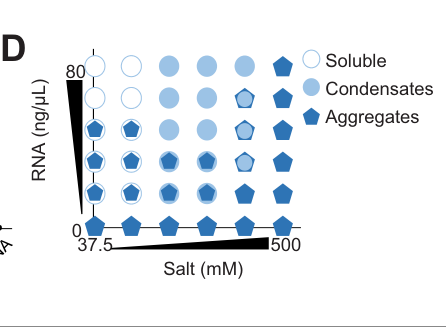

MEG-3 (Maternal-Effect Germline defective 3) is an intrinsically disordered protein (IDP) that serves as the primary scaffold for P granule (germ granule) assembly in C. elegans embryos. MEG-3 contains a serine-rich N-terminal intrinsically disordered region (IDR) and a C-terminal HMG-box domain. It drives liquid-liquid phase separation (LLPS) in an RNA-dependent manner, forming gel-like assemblies that stabilize liquid PGL-3 droplets. MEG-3 establishes a posterior-rich concentration gradient that is anti-correlated with MEX-5, which suppresses MEG-3 granule formation by competing for RNA binding. MEG-3 function is regulated by phosphorylation: it is a substrate of kinase MBK-2/DYRK (promotes disassembly) and phosphatase PP2A/PPTR-1/2 (promotes assembly). MEG-3 functions redundantly with MEG-4; double mutants fail to assemble P granules in early embryos but remain partially fertile (~70%). MEG-3 is essential for efficient RNA recruitment to germ granules and transmission of maternal nuage to primordial germ cells.
| GO Term | Evidence | Action | Reason |
|---|---|---|---|
|
GO:0051640
organelle localization
|
IMP
PMID:25535836 Regulation of RNA granule dynamics by phosphorylation of ser... |
ACCEPT |
Summary: MEG-3 is essential for P granule localization to the posterior of the embryo. PMID:25535836 demonstrates that MEG-3 forms a dynamic domain that surrounds and penetrates P granules, and that phosphorylation/dephosphorylation cycles regulate granule dynamics. This annotation captures MEG-3's role in proper localization of P granules, though a more specific term for P granule localization might be preferred.
Reason: MEG-3 establishes a posterior-rich concentration gradient that positions P granules correctly in the embryo. The Wang et al. 2014 study used lattice light sheet microscopy to show that GFP-tagged MEG-3 localizes to a dynamic domain that surrounds and penetrates each granule. The annotation accurately reflects MEG-3's role in controlling where P granules localize.
Supporting Evidence:
PMID:25535836
GFP-tagged MEG-3 localizes to a dynamic domain that surrounds and penetrates each granule
file:worm/meg-3/meg-3-deep-research-falcon.md
MEG-3 is maternally supplied and forms an **anterior-low/posterior-high cytoplasmic gradient**; within granules it occupies a **peri-granular domain** that surrounds and penetrates granules
|
|
GO:1903863
P granule assembly
|
IGI
PMID:25535836 Regulation of RNA granule dynamics by phosphorylation of ser... |
ACCEPT |
Summary: This is a core function annotation. MEG-3 is the primary driver of P granule assembly through liquid-liquid phase separation. The IGI evidence reflects genetic interactions with meg-4 (WBGene00016485) and other genes. MEG-3/MEG-4 double mutants fail to assemble P granules in early embryos.
Reason: P granule assembly is the defining core function of MEG-3. The Wang et al. 2014 study shows that MEG proteins are germ plasm components that are required redundantly for fertility and that they regulate RNA granule dynamics. The genetic interaction with meg-4 demonstrates functional redundancy in P granule assembly.
Supporting Evidence:
PMID:25535836
The MEG (maternal-effect germline defective) proteins are germ plasm components that are required redundantly for fertility
file:worm/meg-3/meg-3-deep-research-falcon.md
P-granule asymmetry** in the polarized zygote depends on **RNA-induced phase separation/condensation of MEG-3**, which acts upstream of stable PGL/GLH granule retention
file:worm/meg-3/meg-3-deep-research-falcon.md
MEG-3/4 act **upstream** of PGL components in zygotes: they are needed for stable, asymmetric posterior P-granule assembly and for segregation of granule contents into germline blastomeres
|
|
GO:0036093
germ cell proliferation
|
IGI
PMID:25535836 Regulation of RNA granule dynamics by phosphorylation of ser... |
KEEP AS NON CORE |
Summary: This annotation reflects a downstream phenotype of MEG-3 function rather than a direct molecular function. MEG-3/MEG-4 double mutants show reduced fertility (~70% fertile), which correlates with germ cell proliferation defects. However, MEG-3's primary role is in P granule assembly, not direct regulation of germ cell proliferation.
Reason: While meg-3 meg-4 double mutants show fertility defects, MEG-3's direct
molecular function is P granule scaffold activity, not direct regulation of
proliferation. The germ cell proliferation phenotype is a downstream consequence
of defective P granule assembly and impaired germ plasm inheritance. This annotation
is not incorrect but represents a non-core, secondary phenotype. Falcon deep research
reinforces that the fertility/germ-plasm roles are downstream of MEG-3's scaffold
activity: MEG-3/4 act upstream of PGL components and loss of MEG-3 produces graded
sterility (~30% in meg-3 meg-4; 100% in the meg-1 meg-3 meg-4 triple), indicating
an overlapping, redundant germ-plasm function rather than a dedicated proliferation role.
Supporting Evidence:
PMID:25535836
The MEG (maternal-effect germline defective) proteins are germ plasm components that are required redundantly for fertility
file:worm/meg-3/meg-3-deep-research-falcon.md
meg-3 meg-4** mutants show **~30% sterility**
file:worm/meg-3/meg-3-deep-research-falcon.md
MEG-3/4 act **upstream** of PGL components in zygotes: they are needed for stable, asymmetric posterior P-granule assembly and for segregation of granule contents into germline blastomeres
|
|
GO:0005515
protein binding
|
IPI
PMID:25535836 Regulation of RNA granule dynamics by phosphorylation of ser... |
MODIFY |
Summary: This annotation captures MEG-3's interactions with MBK-2 (UniProtKB:A9UJN4), PPTR-1 (UniProtKB:O18178), and PPTR-2 (UniProtKB:Q304E5). These are functionally important interactions for regulating MEG-3 phosphorylation status and P granule dynamics. However, 'protein binding' is too general; more specific terms should be used.
Reason: The protein binding annotation is too vague. MEG-3's interactions with MBK-2 kinase and PP2A phosphatase regulatory subunits PPTR-1/2 are functionally important for its regulation. A more informative annotation would be molecular condensate scaffold activity (GO:0140693), which captures MEG-3's true function in binding and bringing together macromolecules into a phase-separated condensate.
Proposed replacements:
molecular condensate scaffold activity
Supporting Evidence:
PMID:25535836
We demonstrate that MEG-1 and MEG-3 are substrates of the kinase MBK-2/DYRK and the phosphatase PP2A(PPTR-½)
file:worm/meg-3/meg-3-deep-research-falcon.md
MEG-3 is an experimentally identified substrate of the DYRK-family kinase **MBK-2**, and is also regulated by **PP2A phosphatase activity (PPTR-1/2-associated)**
file:worm/meg-3/meg-3-deep-research-falcon.md
a **C-terminal predicted ordered HMG-like motif (HMGL)** that contributes to condensation and **mediates binding to PGL-3**
|
|
GO:0005737
cytoplasm
|
IDA
PMID:25535836 Regulation of RNA granule dynamics by phosphorylation of ser... |
ACCEPT |
Summary: MEG-3 localizes to the cytoplasm, specifically in association with P granules. This annotation is correct but very general; the more specific P granule localization is also annotated.
Reason: This is a correct but general localization annotation. MEG-3 is cytoplasmic and specifically associates with P granules. The study used GFP-tagged MEG-3 to show cytoplasmic localization. While the P granule annotation is more informative, this broader cytoplasm annotation is not incorrect and captures the general cellular compartment.
Supporting Evidence:
PMID:25535836
GFP-tagged MEG-3 localizes to a dynamic domain that surrounds and penetrates each granule
file:worm/meg-3/meg-3-deep-research-falcon.md
MEG-3 is maternally supplied and forms an **anterior-low/posterior-high cytoplasmic gradient**; within granules it occupies a **peri-granular domain** that surrounds and penetrates granules
|
|
GO:0043186
P granule
|
IDA
PMID:25535836 Regulation of RNA granule dynamics by phosphorylation of ser... |
ACCEPT |
Summary: This is a core localization annotation. MEG-3 localizes to P granules and forms a dynamic scaffold surrounding and penetrating each granule. This was demonstrated by lattice light sheet microscopy of GFP-tagged MEG-3.
Reason: P granule localization is the key cellular component annotation for MEG-3. The Wang et al. 2014 study clearly demonstrates using lattice light sheet microscopy that GFP-tagged MEG-3 localizes to a dynamic domain that surrounds and penetrates each granule. MEG-3 is a core structural component of P granules.
Supporting Evidence:
PMID:25535836
GFP-tagged MEG-3 localizes to a dynamic domain that surrounds and penetrates each granule
file:worm/meg-3/meg-3-deep-research-falcon.md
MEG-3 contributes a distinct material phase that surrounds and interpenetrates PGL-rich regions
|
|
GO:0005515
protein binding
|
IPI
PMID:11922622 Isolation of the interacting molecules with GEX-3 by a novel... |
MARK AS OVER ANNOTATED |
Summary: This annotation from 2002 reflects MEG-3 (as GEI-12) binding to GEX-3 in a yeast two-hybrid screen. The physiological significance of this interaction is unclear from the publication abstract. GEX-3 is involved in tissue morphogenesis.
Reason: The Tsuboi et al. 2002 study was a methodological paper describing a novel
screening approach, using GEX-3 as a model case to identify interacting molecules.
While MEG-3/GEI-12 was identified as an interactor, the biological significance
of this interaction is not established. The relevance to MEG-3's core P granule
function is unclear. This appears to be a non-specific or weak interaction that
may not reflect in vivo function. Notably, the falcon deep research synthesis of the
primary MEG-3 literature does not mention a GEX-3/GEI-12 interaction at all; the
well-supported function across studies is that MEG-3 is an RNA-condensate scaffold
for embryonic germ granules, not a GEX-3 binding partner, further supporting
over-annotation of this generic protein-binding term.
Supporting Evidence:
PMID:11922622
We identified many interacting molecules by yeast two-hybrid screening and could detect some functional interactions
file:worm/meg-3/meg-3-deep-research-falcon.md
MEG-3 is best annotated as an **RNA-condensate scaffold/regulator of embryonic germ granule assembly and mRNA partitioning** rather than as an enzyme or transporter
|
|
GO:0009792
embryo development ending in birth or egg hatching
|
IMP
PMID:11922622 Isolation of the interacting molecules with GEX-3 by a novel... |
KEEP AS NON CORE |
Summary: This is a very broad biological process annotation. While MEG-3 mutants do show embryonic phenotypes (reduced fertility, P granule defects), this term is too general to be informative about MEG-3's specific function in P granule assembly.
Reason: The embryo development annotation is not incorrect but is too broad. MEG-3's primary function is in P granule assembly and germ plasm organization, which are specific aspects of early embryo development. The fertility defects in meg-3 meg-4 double mutants (~70% fertility) demonstrate a role in embryonic development, but this annotation does not capture the specific molecular and cellular function. More specific terms like P granule assembly (GO:1903863) are already annotated.
Supporting Evidence:
PMID:25535836
The MEG (maternal-effect germline defective) proteins are germ plasm components that are required redundantly for fertility
file:worm/meg-3/meg-3-deep-research-falcon.md
MEG-3/4 act **upstream** of PGL components in zygotes: they are needed for stable, asymmetric posterior P-granule assembly and for segregation of granule contents into germline blastomeres
|
|
GO:0140693
molecular condensate scaffold activity
|
IDA
PMID:25535836 Regulation of RNA granule dynamics by phosphorylation of ser... |
NEW |
Summary: MEG-3 is the primary scaffold protein for P granule assembly through liquid-liquid phase separation. It binds and brings together RNA and other P granule proteins (PGL-1, PGL-3) to organize the molecular condensate.
Reason: MEG-3 is an excellent example of a molecular condensate scaffold. The
term definition "Binding and bringing together two or more macromolecules in
contact, permitting those molecules to organize as a molecular condensate" precisely
describes MEG-3's function. The Wang et al. 2014 study shows MEG-3 localizes
to a dynamic domain surrounding P granules and regulates their assembly through
phosphorylation-dependent phase transitions. Falcon deep research independently
synthesizes the primary literature to the same conclusion: MEG-3 is an intrinsically
disordered protein that binds RNA broadly and uses RNA-stimulated condensation to
organize germ-plasm RNP condensates, recruiting maternal mRNAs by forming a gel-like
RNA-rich phase on the surface of more dynamic PGL condensates, with a C-terminal
HMG-like motif mediating binding to PGL-3 for co-assembly of the composite granule.
Supporting Evidence:
PMID:25535836
GFP-tagged MEG-3 localizes to a dynamic domain that surrounds and penetrates each granule
PMID:34106046
MEG-3 is a modular protein that uses its IDR to bind RNA and its C-terminus to drive condensation. The HMGL motif mediates binding to PGL-3 and is required for co-assembly of MEG-3 and PGL-3 condensates in vivo.
PMID:31975687
P granules recruit mRNAs by condensation with the disordered protein MEG-3.
file:worm/meg-3/meg-3-deep-research-falcon.md
an intrinsically disordered protein (IDP) that binds RNA broadly and uses RNA-stimulated condensation to spatially organize germ-plasm RNP condensates
file:worm/meg-3/meg-3-deep-research-falcon.md
It also recruits maternal mRNAs into granules by forming a **gel-like RNA-rich phase** on the surface of more dynamic PGL condensates
|
|
GO:0060293
germ plasm
|
IDA
PMID:25535836 Regulation of RNA granule dynamics by phosphorylation of ser... |
NEW |
Summary: MEG-3 is a component of the germ plasm. P granules are germ plasm components, and MEG-3 localizes to and drives the assembly of P granules, which are the defining structures of C. elegans germ plasm.
Reason: The Wang et al. 2014 study explicitly states that the MEG proteins are germ plasm components. Germ plasm (GO:0060293) is defined as differentiated cytoplasm associated with a pole of an oocyte, egg or early embryo that will be inherited by the cells that will give rise to the germ line. MEG-3's localization to P granules, which are the cytoplasmic manifestation of germ plasm in C. elegans, supports this annotation.
Supporting Evidence:
PMID:25535836
The MEG (maternal-effect germline defective) proteins are germ plasm components that are required redundantly for fertility
PMID:34106046
germ (P) granule assembly requires MEG-3, an intrinsically disordered protein that forms RNA-rich condensates on the surface of PGL condensates at the core of P granules
file:worm/meg-3/meg-3-deep-research-falcon.md
MEG-3 is maternally supplied and forms an **anterior-low/posterior-high cytoplasmic gradient**; within granules it occupies a **peri-granular domain** that surrounds and penetrates granules
|
Q: What is the precise mechanism by which MEG-3 IDR drives phase separation - does it involve specific amino acid motifs or is it a more general property of the disordered region?
Q: How does MEG-3 coordinate with MEG-4 in P granule assembly, and why are single mutants fertile while double mutants show significant fertility defects?
Q: Lee et al. 2020 (PMID:31975687) showed MEG-3 binds ~500 mRNAs in a sequence-independent manner favoring long, low-ribosome-occupancy embryonic transcripts. How is this RNA capture modulated by MEG-3 phosphorylation state (MBK-2 vs PP2A/PPTR-1/2), and how does posterior MEG-3 discriminate its mRNAs from the MEX-5-bound transcript pool in the anterior cytoplasm?
Experiment: Compare MEG-3 in vivo RNA binding (iCLIP/CLIP) between phosphomimetic and phospho-dead MEG-3 alleles, or in mbk-2 versus pptr-1/2 perturbed backgrounds, to test whether the MEG-3 RNA target set changes with phosphorylation state. The sequence-independent ~500-mRNA target set is already known from Lee et al. 2020 iCLIP (PMID:31975687); this follow-up instead asks how the MBK-2/PP2A assembly-disassembly switch reshapes RNA capture rather than re-identifying targets.
Hypothesis: MBK-2 phosphorylation reduces MEG-3 RNA condensation and the breadth/amount of bound mRNA, while PP2A/PPTR-1/2-mediated dephosphorylation increases RNA capture, linking the phospho-switch to mRNA recruitment.
Experiment: Spatially resolved (anterior vs posterior) profiling of MEG-3-bound versus MEX-5-bound transcripts in the polarized zygote, e.g. by region-specific crosslinking/proximity labeling, to determine whether MEG-3 captures a distinct mRNA pool from MEX-5 or simply condenses whatever RNA escapes the MEX-5 anterior sink.
Hypothesis: MEG-3 and MEX-5 compete for a shared, largely sequence-independent mRNA pool, so posterior MEG-3 enrichment of mRNAs reflects local RNA availability set by the MEX-5 gradient rather than intrinsic MEG-3 sequence specificity.
Experiment: Structure-function analysis of MEG-3 IDR using systematic deletions. This would identify minimal sequences required for phase separation and P granule assembly.
Hypothesis: Specific sequence motifs within the IDR are required for phase separation
Experiment: Phospho-proteomic analysis of MEG-3 under different developmental conditions. This would map the phosphorylation sites regulated by MBK-2 and PP2A and correlate with granule dynamics.
Hypothesis: Specific phosphorylation sites control the sol-gel transition of MEG-3
The research report should be a detailed narrative explaining the function, biological processes, and localization of the gene product. Citations should be given for all claims.
You should prioritize authoritative reviews and primary scientific literature when conducting research. You can supplement
this with annotations you find in gene/protein databases, but these can be outdated or inaccurate.
We are specifically interested in the primary function of the gene - for enzymes, what reaction is catalyzed, and what is the substrate specificity? For transporters, what is the substrate? For structural proteins or adapters, what is the broader structural role? For signaling molecules, what is the role in the pathway.
We are interested in where in or outside the cell the gene product carries out its function.
We are also interested in the signaling or biochemical pathways in which the gene functions. We are less interested in broad pleiotropic effects, except where these elucidate the precise role.
Include evidence where possible. We are interested in both experimental evidence as well as inference from structure, evolution, or bioinformatic analysis. Precise studies should be prioritized over high-throughput, where available.
Primary literature explicitly links meg-3 to F52D2.4 and UniProt Q9TXM1, and characterizes the gene product as a maternal germ-plasm/P-granule component rather than an enzyme or transporter (Schmidt et al., 2021, eLife; URL https://doi.org/10.7554/eLife.63698) (schmidt2021proteinbasedcondensationmechanisms pages 1-2). All claims below refer to this C. elegans MEG-3 protein.
P granules are germline ribonucleoprotein (RNP) condensates in early embryos and the germline that behave as biomolecular condensates assembled by phase-separation-like mechanisms. In embryos, P granules exhibit a multi-phase architecture in which MEG-3 contributes a distinct material phase that surrounds and interpenetrates PGL-rich regions (wang2014regulationofrna pages 11-13, lee2020recruitmentofmrnas pages 1-2).
MEG-3’s primary biochemical function is best described as an RNA-condensate scaffold: an intrinsically disordered protein (IDP) that binds RNA broadly and uses RNA-stimulated condensation to spatially organize germ-plasm RNP condensates (smith2016spatialpatterningof pages 2-3, lee2020recruitmentofmrnas pages 1-2).
In embryos, MEG-3 is maternally supplied and forms an anterior-low/posterior-high cytoplasmic gradient; within granules it occupies a peri-granular domain that surrounds and penetrates granules rather than simply overlapping with the PGL core (Wang et al., 2014, eLife; publication date Dec 2014; URL https://doi.org/10.7554/eLife.04591) (wang2014regulationofrna pages 11-13, wang2014regulationofrna pages 1-2). Quantitatively, in 34/37 granules examined, the GFP::MEG-3 domain extended over a larger area than mCherry::PGL-3 (wang2014regulationofrna pages 11-13).
Embryonic P granules can be described as at least two coupled phases:
- a MEG phase (gel-like, RNA-rich; relatively non-dynamic), and
- a PGL phase (more dynamic, liquid-like) (lee2020recruitmentofmrnas pages 1-2, schmidt2021proteinbasedcondensationmechanisms pages 1-2).
MEG-3 shows broad, largely sequence-independent RNA binding in vivo, with iCLIP identifying binding to approximately ~500 mRNAs; bound transcripts are enriched for long embryonic mRNAs with low ribosome occupancy (Lee et al., 2020, eLife; publication date Jan 2020; URL https://doi.org/10.7554/eLife.52896) (lee2020recruitmentofmrnas pages 1-2, lee2020recruitmentofmrnas pages 9-10).
In vitro, recombinant MEG-3 condenses with added RNA under defined conditions (e.g., 500 nM MEG-3 with 20 ng/mL transcript in 150 mM salt), generating assemblies with radii <400 nm, while RNA alone does not form condensates even at higher RNA concentration (lee2020recruitmentofmrnas pages 9-10). Figure evidence supporting the in vitro condensation/phase behavior is shown in Lee et al. (2020) Figure 4 panels (lee2020recruitmentofmrnas media 4c2d7270, lee2020recruitmentofmrnas media 5a997949, lee2020recruitmentofmrnas media a12afdd6).
A central mechanistic model is that P-granule asymmetry in the polarized zygote depends on RNA-induced phase separation/condensation of MEG-3, which acts upstream of stable PGL/GLH granule retention (Smith et al., 2016, eLife; publication date Sep 2016; URL https://doi.org/10.1101/073908) (smith2016spatialpatterningof pages 2-3). Accessible RNA is limiting for MEG-3 condensation in vivo and in vitro, and blocking mRNA turnover can stimulate MEG-3 coalescence into macroscopic granules (smith2016spatialpatterningof pages 11-12).
MEG-3 is described as modular with:
- an N-terminal intrinsically disordered region (IDR) that binds RNA, and
- a C-terminal predicted ordered HMG-like motif (HMGL) that contributes to condensation and mediates binding to PGL-3 (Schmidt et al., 2021; URL https://doi.org/10.7554/eLife.63698) (schmidt2021proteinbasedcondensationmechanisms pages 1-2).
Key experimentally supported interaction/assembly relationships include:
- PGL proteins (PGL-1/PGL-3): MEG-3 associates with PGL condensates; HMGL-mediated interaction with PGL-3 is required for co-assembly into the composite granule; HMGL mutations cause MEG-3 and PGL-3 to form separate condensates that fail to co-segregate and fail to recruit RNA effectively (schmidt2021proteinbasedcondensationmechanisms pages 1-2).
- MEX-5: an anterior-enriched RNA-binding protein that suppresses MEG-3 condensation by limiting MEG-3’s access to RNA; MEX-5 RNA-binding activity is sufficient to inhibit RNA-induced MEG-3 phase separation in vitro and MEG-3 granule assembly in vivo (smith2016spatialpatterningof pages 11-12, smith2016spatialpatterningof pages 2-3).
- MIP-1/MIP-2 (LOTUS-domain proteins): identified as MEG-3-interacting organizational hubs required for proper coalescence of multiple P-granule components and supporting distinct embryonic vs later perinuclear assembly pathways (Cipriani et al., 2021, eLife; publication date Jul 2021; URL https://doi.org/10.7554/eLife.60833) (cipriani2021novellotusdomainproteins pages 20-21).
MEG-3 is serine-rich (reported 119 serines) and its charge properties are proposed to be tuned by phosphorylation (wang2014regulationofrna pages 15-16). MEG-3 is an experimentally identified substrate of the DYRK-family kinase MBK-2, and is also regulated by PP2A phosphatase activity (PPTR-1/2-associated). Functionally, MBK-2 phosphorylation promotes granule disassembly, whereas PP2A/PPTR antagonizes MBK-2 and promotes assembly (Wang et al., 2014; URL https://doi.org/10.7554/eLife.04591) (wang2014regulationofrna pages 1-2, wang2014regulationofrna pages 15-16).
In the zygote, MEG-3 condensation is spatially patterned by gradients in RNA availability: MEX-5 acts as an mRNA sink that suppresses MEG-3 condensation in the anterior, consistent with a mechanism in which MEG-3 condensation is activated where “MEX-5-free” RNA is available (smith2016spatialpatterningof pages 2-3, smith2016spatialpatterningof pages 11-12).
MEG proteins contribute redundantly to fertility and germ plasm function.
- Reported sterility penetrance examples include ~30% sterility in meg-3 meg-4 mutants, ~4% sterility in meg-1 mutants, and 100% sterility in a meg-1 meg-3 meg-4 triple mutant (Wang et al., 2014; Dec 2014; URL https://doi.org/10.7554/eLife.04591) (wang2014regulationofrna pages 15-16).
- In sensitized backgrounds affecting germline regulators, combining meg-3 meg-4 with other perturbations increases sterility (e.g., an example of 46 ± 15% sterile progeny is reported for a specific genetic combination in Lee et al., 2020) (lee2020recruitmentofmrnas pages 9-10).
Direct 2023–2024 mechanistic work focused specifically on MEG-3 biophysics is limited in the retrieved corpus; however, recent high-impact studies leverage MEG-3 network components or meg gene perturbations to connect germ-granule organization to organismal physiology.
Price et al. (Nature Communications; publication date Sep 2023; URL https://doi.org/10.1038/s41467-023-41556-4) analyzed perinuclear germ granule organization using EGGD-1/MIP-1, a protein previously identified as MEG-3-interacting and important for granule organization. Loss of eggd-1 caused dramatic reorganization of germ granules, including changes in PGL-1 granule volumes at specific subcellular locations (e.g., 2.64-fold decrease at the nuclear membrane; and formation of very large foci up to 25 µm³) and triggered somatic nuclear accumulation of HLH-30, interpreted as germ-granule-to-soma communication (price2023c.elegansgerm pages 1-2).
Zhou et al. (Nature Communications; publication date Oct 2024; URL https://doi.org/10.1038/s41467-024-53064-0) described a germline-to-soma signal that modulates age-related decline in somatic mitochondrial stress response (UPRmt). The authors note that meg-1/meg-3/meg-4 are required for cytoplasmic but not perinuclear P granule formation, and report that RNAi against meg-1, meg-3, or meg-4 did not block embryo-lysate-induced UPRmt activation in adults, suggesting that this particular signaling phenomenon can proceed without these cytoplasmic P-granule factors (zhou2024agermlinetosomasignal pages 1-2).
MEG-3 is widely used as a model system component for:
- Mechanistic dissection of biomolecular condensates in vivo and in vitro, because it provides a genetically tractable scaffold whose condensation can be reconstituted with RNA and regulated by phosphorylation and RNA availability (smith2016spatialpatterningof pages 2-3, wang2014regulationofrna pages 1-2, lee2020recruitmentofmrnas pages 9-10).
- Experimental platforms for structure–function studies of multi-phase condensates (e.g., separating RNA-binding IDRs from “client recruitment” interfaces such as HMGL-PGL binding) (schmidt2021proteinbasedcondensationmechanisms pages 1-2).
- Small-RNA and epigenetic inheritance studies, leveraging meg-3/4 perturbations that disrupt embryonic P granule assembly and alter small-RNA-mediated gene regulation over generations (ouyang2019pgranulesprotect pages 1-3, lee2020recruitmentofmrnas pages 14-15).
Across multiple independent studies, the best-supported annotation is that MEG-3 is a regulated, intrinsically disordered RNA-condensing scaffold that nucleates/stabilizes germline P granules and promotes selective partitioning (enrichment) of maternal mRNAs into the germ lineage. Its function emerges from (i) RNA-stimulated condensation, (ii) physical coupling to PGL condensates, and (iii) regulation by phosphorylation and RNA availability gradients (smith2016spatialpatterningof pages 2-3, schmidt2021proteinbasedcondensationmechanisms pages 1-2, wang2014regulationofrna pages 1-2, smith2016spatialpatterningof pages 11-12).
| Topic | Key findings | Key sources | URL/DOI | Notes/quantitative data |
|---|---|---|---|---|
| Identity | MEG-3 is the C. elegans germline protein encoded by meg-3 / F52D2.4 / gei-12, matching UniProt Q9TXM1. It is a maternal-effect germline defective (MEG) protein required, with paralogs, for embryonic germ plasm/P-granule organization rather than a classical enzyme or transporter (schmidt2021proteinbasedcondensationmechanisms pages 1-2, wang2014regulationofrna pages 15-16). | Wang 2014, eLife; Schmidt 2021, eLife | https://doi.org/10.7554/eLife.04591 ; https://doi.org/10.7554/eLife.63698 | Gene identity explicitly linked to meg-3; F52D2.4; UniProt Q9TXM1 in Schmidt 2021 (schmidt2021proteinbasedcondensationmechanisms pages 1-2). |
| Molecular features | MEG-3 is a serine-rich intrinsically disordered protein (IDP) with strong predicted basicity and RNA-binding propensity. Later work showed it is modular, with an N-terminal IDR for RNA binding and a C-terminal HMG-like (HMGL) motif that promotes condensation and binding to PGL-3 (wang2014regulationofrna pages 15-16, schmidt2021proteinbasedcondensationmechanisms pages 1-2). | Wang 2014, eLife; Schmidt 2021, eLife | https://doi.org/10.7554/eLife.04591 ; https://doi.org/10.7554/eLife.63698 | Reported features include 119 serines and predicted unphosphorylated pI 9.74 in Wang 2014; Lee 2020 reports predicted pI 9.3 for recombinant/assayed MEG-3 context (wang2014regulationofrna pages 15-16, lee2020recruitmentofmrnas pages 9-10). |
| Localization | In embryos, MEG-3 localizes to the germ plasm/P granules, forming an anterior-low/posterior-high gradient and occupying a peri-granular domain that surrounds and penetrates P granules rather than perfectly overlapping with PGL cores (wang2014regulationofrna pages 11-13, wang2014regulationofrna pages 1-2). It is absent from adult perinuclear P granules, indicating stage-specific roles in embryonic cytoplasmic granules (wang2014regulationofrna pages 11-13). | Wang 2014, eLife; Smith 2016, eLife | https://doi.org/10.7554/eLife.04591 ; https://doi.org/10.1101/073908 | In 34/37 analyzed granules, GFP::MEG-3 extended over a larger area than mCherry::PGL-3 (wang2014regulationofrna pages 11-13). Cytoplasmic granules in polarized zygotes are typically about ~1 µm (smith2016spatialpatterningof pages 2-3). |
| Molecular function | MEG-3 acts as a P-granule scaffold: it binds RNA, undergoes RNA-stimulated phase separation, and promotes localized assembly of posterior embryonic P granules. It also recruits maternal mRNAs into granules by forming a gel-like RNA-rich phase on the surface of more dynamic PGL condensates (smith2016spatialpatterningof pages 2-3, lee2020recruitmentofmrnas pages 1-2). | Smith 2016, eLife; Lee 2020, eLife | https://doi.org/10.1101/073908 ; https://doi.org/10.7554/eLife.52896 | MEG-3 condensates are small/non-dynamic and associate with larger PGL liquid condensates; in vivo size threshold described as <500 nm for MEG-3 versus >500 nm for PGL condensates (lee2020recruitmentofmrnas pages 1-2). |
| RNA binding / substrate specificity | MEG-3 is not sequence-specific like a canonical RBP; instead it binds RNA broadly and condenses with many maternal transcripts, favoring long embryonic mRNAs with low ribosome occupancy. iCLIP identified binding to ~500 mRNAs in vivo, supporting a broad RNA-condensation role rather than catalytic specificity (lee2020recruitmentofmrnas pages 1-2, lee2020recruitmentofmrnas pages 9-10). | Lee 2020, eLife; Schmidt 2021, eLife | https://doi.org/10.7554/eLife.52896 ; https://doi.org/10.7554/eLife.63698 | Recombinant MEG-3 at 500 nM condensed with transcripts at 20 ng/mL in 150 mM salt; resulting assemblies had radii <400 nm; RNA alone did not condense even at 80 ng/mL (lee2020recruitmentofmrnas pages 9-10, lee2020recruitmentofmrnas media 4c2d7270). |
| Regulation | MEG-3 assembly is regulated by phosphorylation state and by local RNA availability. MBK-2/DYRK phosphorylation promotes granule disassembly, whereas PP2A/PPTR-1/2 antagonizes this and promotes assembly; MEX-5 suppresses MEG-3 phase separation by limiting access to RNA, especially in the anterior cytoplasm (wang2014regulationofrna pages 15-16, smith2016spatialpatterningof pages 11-12, wang2014regulationofrna pages 1-2). | Wang 2014, eLife; Smith 2016, eLife | https://doi.org/10.7554/eLife.04591 ; https://doi.org/10.1101/073908 | MBK-2 and PP2A define an assembly/disassembly switch. MEX-5 RNA-binding activity is necessary/sufficient to inhibit MEG-3 condensation in vitro/in vivo (smith2016spatialpatterningof pages 11-12). |
| Interactors / condensate architecture | MEG-3 interacts functionally and/or directly with PGL-1/PGL-3, helps recruit GLH proteins, and later was shown to interact with/act alongside MIP-1/MIP-2 (EGGD proteins) in granule organization. The HMGL motif mediates binding to PGL-3 and is needed for co-assembly of MEG and PGL phases (schmidt2021proteinbasedcondensationmechanisms pages 1-2, smith2016spatialpatterningof pages 11-12, cipriani2021novellotusdomainproteins pages 20-21). | Schmidt 2021, eLife; Smith 2016, eLife; Cipriani 2021, eLife | https://doi.org/10.7554/eLife.63698 ; https://doi.org/10.1101/073908 ; https://doi.org/10.7554/eLife.60833 | HMGL mutants cause MEG-3 and PGL-3 to separate into distinct condensates that fail to co-segregate and recruit RNA properly (schmidt2021proteinbasedcondensationmechanisms pages 1-2). |
| Granule material properties | MEG-3 forms a gel-like, relatively non-dynamic shell/surface phase that stabilizes more labile liquid PGL droplets. This two-phase architecture explains how P granules can be simultaneously dynamic at long range yet locally stable in the posterior embryo (schmidt2021proteinbasedcondensationmechanisms pages 1-2, lee2020recruitmentofmrnas pages 1-2). | Lee 2020, eLife; Schmidt 2021, eLife | https://doi.org/10.7554/eLife.52896 ; https://doi.org/10.7554/eLife.63698 | MEG-3 condensates resist dilution/salt more than liquid PGL condensates; this supports a gel + liquid composite model (schmidt2021proteinbasedcondensationmechanisms pages 1-2, lee2020recruitmentofmrnas pages 1-2). |
| Developmental/segregation role | MEG-3/4 act upstream of PGL components in zygotes: they are needed for stable, asymmetric posterior P-granule assembly and for segregation of granule contents into germline blastomeres. Without MEG-3/4, PGL/GLH assemblies are transient or non-asymmetric and mRNAs are not properly enriched in the germ lineage (smith2016spatialpatterningof pages 2-3, lee2020recruitmentofmrnas pages 9-10). | Smith 2016, eLife; Lee 2020, eLife | https://doi.org/10.1101/073908 ; https://doi.org/10.7554/eLife.52896 | P-granule incorporation can enrich RNAs in P4 by as much as ~5-fold according to later discussion of the Lee/Ouyang framework (lee2020recruitmentofmrnas pages 14-15). |
| Phenotypes | Loss of MEG proteins causes fertility defects that become more severe in combinations. meg-3 meg-4 mutants show ~30% sterility; meg-1 single mutants are ~4% sterile; the meg-1 meg-3 meg-4 triple mutant is 100% sterile, indicating overlapping but essential germ plasm functions beyond visible granules (wang2014regulationofrna pages 15-16, lee2020recruitmentofmrnas pages 9-10). | Wang 2014, eLife; Lee 2020, eLife | https://doi.org/10.7554/eLife.04591 ; https://doi.org/10.7554/eLife.52896 | Synthetic germline defects increase when meg-3/4 is combined with other germline regulators; one example reported 46 ± 15% sterile progeny in a sensitized background (lee2020recruitmentofmrnas pages 9-10). |
| Small RNA homeostasis / piRNA protection | Embryonic P granules assembled by MEG-3/4 protect some endogenous RNAi genes from runaway silencing. In meg-3 meg-4 mutants, P granules fail in primordial germ cells, transcripts such as rde-11 and sid-1 become hyper-targeted by secondary small RNAs, and animals progressively lose RNAi competence over generations; this supports a “safe harbor” model for P granules (ouyang2019pgranulesprotect pages 1-3). | Ouyang 2019, bioRxiv | https://doi.org/10.1101/707562 | Example phenotype: after pos-1(RNAi), viable embryos were reported as 6.5% vs 76% in the compared conditions cited by the study summary (ouyang2019pgranulesprotect pages 1-3). |
| 2023: germ granule organization and soma communication | While focused on EGGD-1/MIP-1, Price 2023 is relevant because MIP-1 is a MEG-3-interacting organizer of perinuclear germ granules. Disrupting this network caused major granule mislocalization and activated a somatic HLH-30 transcriptional response, linking germ granule organization to germline-to-soma communication (price2023c.elegansgerm pages 1-2). | Price 2023, Nature Communications | https://doi.org/10.1038/s41467-023-41556-4 | Quantitative effects in eggd-1 mutants: perinuclear PGL-1::RFP granules decreased 2.64-fold (0.482 → 0.183 µm³), rachis granules increased to 0.947 µm³, and some aggregates reached 25 µm³ (price2023c.elegansgerm pages 1-2). |
| 2024: aging/stress-signaling links | Zhou 2024 connected germline piRNA-state changes to an age-related decline in somatic UPRmt and noted that meg-1/3/4 are required for cytoplasmic but not perinuclear P granules. In that assay, knockdown of meg-1, meg-3, or meg-4 did not block embryo-lysate-induced UPRmt activation, suggesting MEG-dependent embryonic cytoplasmic granules are not the sole route for this germline-to-soma signaling axis (zhou2024agermlinetosomasignal pages 1-2). | Zhou 2024, Nature Communications | https://doi.org/10.1038/s41467-024-53064-0 | The same study implicated prg-1, prde-1, drh-3, hrde-1, hpl-2, sid-1 in the signaling pathway; no explicit numeric values were present in the extracted text (zhou2024agermlinetosomasignal pages 1-2). |
| Expert synthesis / current understanding | The current model is that MEG-3 is a developmental condensate scaffold: its IDR binds RNA, its HMGL region links to PGL condensates, and regulated gel-like assembly locally stabilizes posterior embryonic P granules while enriching maternal RNAs and influencing later small-RNA homeostasis. Expert analyses emphasize that MEG-3-driven RNA condensation, not enzymatic catalysis, is its primary biochemical role (schmidt2021proteinbasedcondensationmechanisms pages 1-2, lee2020recruitmentofmrnas pages 14-15, cipriani2021novellotusdomainproteins pages 20-21). | Schmidt 2021, eLife; Lee 2020, eLife; Cipriani 2021, eLife | https://doi.org/10.7554/eLife.63698 ; https://doi.org/10.7554/eLife.52896 ; https://doi.org/10.7554/eLife.60833 | MEG-3 is best annotated as an RNA-condensate scaffold/regulator of embryonic germ granule assembly and mRNA partitioning rather than as an enzyme or transporter (schmidt2021proteinbasedcondensationmechanisms pages 1-2, lee2020recruitmentofmrnas pages 14-15). |
Table: This table summarizes the experimentally supported identity, molecular properties, localization, function, regulation, phenotypes, and recent systems-level links of C. elegans MEG-3. It is useful as a compact evidence-based annotation centered on primary literature and recent high-quality studies.
Lee et al. (2020) Figure 4 panels illustrating MEG-3 condensation behavior and quantitative phase/condensate classification are available here: (lee2020recruitmentofmrnas media 4c2d7270, lee2020recruitmentofmrnas media 5a997949, lee2020recruitmentofmrnas media a12afdd6).
References
(schmidt2021proteinbasedcondensationmechanisms pages 1-2): Helen Schmidt, Andrea Putnam, Dominique Rasoloson, and Geraldine Seydoux. Protein-based condensation mechanisms drive the assembly of rna-rich p granules. eLife, Jun 2021. URL: https://doi.org/10.7554/elife.63698, doi:10.7554/elife.63698. This article has 31 citations and is from a domain leading peer-reviewed journal.
(wang2014regulationofrna pages 11-13): Jennifer T Wang, Jarrett Smith, Bi-Chang Chen, Helen Schmidt, Dominique Rasoloson, Alexandre Paix, Bramwell G Lambrus, Deepika Calidas, Eric Betzig, and Geraldine Seydoux. Regulation of rna granule dynamics by phosphorylation of serine-rich, intrinsically disordered proteins in c. elegans. eLife, Dec 2014. URL: https://doi.org/10.7554/elife.04591, doi:10.7554/elife.04591. This article has 438 citations and is from a domain leading peer-reviewed journal.
(lee2020recruitmentofmrnas pages 1-2): Chih-Yung S Lee, Andrea Putnam, Tu Lu, ShuaiXin He, John Paul T Ouyang, and Geraldine Seydoux. Recruitment of mrnas to p granules by condensation with intrinsically-disordered proteins. eLife, Jan 2020. URL: https://doi.org/10.7554/elife.52896, doi:10.7554/elife.52896. This article has 149 citations and is from a domain leading peer-reviewed journal.
(smith2016spatialpatterningof pages 2-3): Jarrett Smith, Deepika Calidas, Helen Schmidt, Tu Lu, Dominique Rasoloson, and Geraldine Seydoux. Spatial patterning of p granules by rna-induced phase separation of the intrinsically-disordered protein meg-3. eLife, Sep 2016. URL: https://doi.org/10.1101/073908, doi:10.1101/073908. This article has 267 citations and is from a domain leading peer-reviewed journal.
(wang2014regulationofrna pages 1-2): Jennifer T Wang, Jarrett Smith, Bi-Chang Chen, Helen Schmidt, Dominique Rasoloson, Alexandre Paix, Bramwell G Lambrus, Deepika Calidas, Eric Betzig, and Geraldine Seydoux. Regulation of rna granule dynamics by phosphorylation of serine-rich, intrinsically disordered proteins in c. elegans. eLife, Dec 2014. URL: https://doi.org/10.7554/elife.04591, doi:10.7554/elife.04591. This article has 438 citations and is from a domain leading peer-reviewed journal.
(lee2020recruitmentofmrnas pages 9-10): Chih-Yung S Lee, Andrea Putnam, Tu Lu, ShuaiXin He, John Paul T Ouyang, and Geraldine Seydoux. Recruitment of mrnas to p granules by condensation with intrinsically-disordered proteins. eLife, Jan 2020. URL: https://doi.org/10.7554/elife.52896, doi:10.7554/elife.52896. This article has 149 citations and is from a domain leading peer-reviewed journal.
(lee2020recruitmentofmrnas media 4c2d7270): Chih-Yung S Lee, Andrea Putnam, Tu Lu, ShuaiXin He, John Paul T Ouyang, and Geraldine Seydoux. Recruitment of mrnas to p granules by condensation with intrinsically-disordered proteins. eLife, Jan 2020. URL: https://doi.org/10.7554/elife.52896, doi:10.7554/elife.52896. This article has 149 citations and is from a domain leading peer-reviewed journal.
(lee2020recruitmentofmrnas media 5a997949): Chih-Yung S Lee, Andrea Putnam, Tu Lu, ShuaiXin He, John Paul T Ouyang, and Geraldine Seydoux. Recruitment of mrnas to p granules by condensation with intrinsically-disordered proteins. eLife, Jan 2020. URL: https://doi.org/10.7554/elife.52896, doi:10.7554/elife.52896. This article has 149 citations and is from a domain leading peer-reviewed journal.
(lee2020recruitmentofmrnas media a12afdd6): Chih-Yung S Lee, Andrea Putnam, Tu Lu, ShuaiXin He, John Paul T Ouyang, and Geraldine Seydoux. Recruitment of mrnas to p granules by condensation with intrinsically-disordered proteins. eLife, Jan 2020. URL: https://doi.org/10.7554/elife.52896, doi:10.7554/elife.52896. This article has 149 citations and is from a domain leading peer-reviewed journal.
(smith2016spatialpatterningof pages 11-12): Jarrett Smith, Deepika Calidas, Helen Schmidt, Tu Lu, Dominique Rasoloson, and Geraldine Seydoux. Spatial patterning of p granules by rna-induced phase separation of the intrinsically-disordered protein meg-3. eLife, Sep 2016. URL: https://doi.org/10.1101/073908, doi:10.1101/073908. This article has 267 citations and is from a domain leading peer-reviewed journal.
(cipriani2021novellotusdomainproteins pages 20-21): Patricia Giselle Cipriani, Olivia Bay, John Zinno, Michelle Gutwein, Hin Hark Gan, Vinay K Mayya, George Chung, Jia-Xuan Chen, Hala Fahs, Yu Guan, Thomas F Duchaine, Matthias Selbach, Fabio Piano, and Kristin C Gunsalus. Novel lotus-domain proteins are organizational hubs that recruit c. elegans vasa to germ granules. eLife, Jul 2021. URL: https://doi.org/10.7554/elife.60833, doi:10.7554/elife.60833. This article has 32 citations and is from a domain leading peer-reviewed journal.
(wang2014regulationofrna pages 15-16): Jennifer T Wang, Jarrett Smith, Bi-Chang Chen, Helen Schmidt, Dominique Rasoloson, Alexandre Paix, Bramwell G Lambrus, Deepika Calidas, Eric Betzig, and Geraldine Seydoux. Regulation of rna granule dynamics by phosphorylation of serine-rich, intrinsically disordered proteins in c. elegans. eLife, Dec 2014. URL: https://doi.org/10.7554/elife.04591, doi:10.7554/elife.04591. This article has 438 citations and is from a domain leading peer-reviewed journal.
(price2023c.elegansgerm pages 1-2): Ian F. Price, Jillian A. Wagner, Benjamin Pastore, Hannah L. Hertz, and Wen Tang. C. elegans germ granules sculpt both germline and somatic rnaome. Nature Communications, Sep 2023. URL: https://doi.org/10.1038/s41467-023-41556-4, doi:10.1038/s41467-023-41556-4. This article has 31 citations and is from a highest quality peer-reviewed journal.
(zhou2024agermlinetosomasignal pages 1-2): Liankui Zhou, Liu Jiang, Lan Li, Chengchuan Ma, Peixue Xia, Wanqiu Ding, and Ying Liu. A germline-to-soma signal triggers an age-related decline of mitochondrial stress response. Nature Communications, Oct 2024. URL: https://doi.org/10.1038/s41467-024-53064-0, doi:10.1038/s41467-024-53064-0. This article has 15 citations and is from a highest quality peer-reviewed journal.
(ouyang2019pgranulesprotect pages 1-3): John Paul T. Ouyang, Andrew Folkmann, Lauren Bernard, Chih-Yung Lee, Uri Seroussi, Amanda G. Charlesworth, Julie M. Claycomb, and Geraldine Seydoux. P granules protect rna interference genes from silencing by pirnas. bioRxiv, Jul 2019. URL: https://doi.org/10.1101/707562, doi:10.1101/707562. This article has 111 citations.
(lee2020recruitmentofmrnas pages 14-15): Chih-Yung S Lee, Andrea Putnam, Tu Lu, ShuaiXin He, John Paul T Ouyang, and Geraldine Seydoux. Recruitment of mrnas to p granules by condensation with intrinsically-disordered proteins. eLife, Jan 2020. URL: https://doi.org/10.7554/elife.52896, doi:10.7554/elife.52896. This article has 149 citations and is from a domain leading peer-reviewed journal.

id: Q9TXM1
gene_symbol: meg-3
product_type: PROTEIN
status: COMPLETE
taxon:
id: NCBITaxon:6239
label: Caenorhabditis elegans
description: 'MEG-3 (Maternal-Effect Germline defective 3) is an intrinsically disordered
protein (IDP) that serves as the primary scaffold for P granule (germ granule) assembly
in C. elegans embryos. MEG-3 contains a serine-rich N-terminal intrinsically disordered
region (IDR) and a C-terminal HMG-box domain. It drives liquid-liquid phase separation
(LLPS) in an RNA-dependent manner, forming gel-like assemblies that stabilize liquid
PGL-3 droplets. MEG-3 establishes a posterior-rich concentration gradient that is
anti-correlated with MEX-5, which suppresses MEG-3 granule formation by competing
for RNA binding. MEG-3 function is regulated by phosphorylation: it is a substrate
of kinase MBK-2/DYRK (promotes disassembly) and phosphatase PP2A/PPTR-1/2 (promotes
assembly). MEG-3 functions redundantly with MEG-4; double mutants fail to assemble
P granules in early embryos but remain partially fertile (~70%). MEG-3 is essential
for efficient RNA recruitment to germ granules and transmission of maternal nuage
to primordial germ cells.'
references:
- id: PMID:11922622
title: Isolation of the interacting molecules with GEX-3 by a novel functional screening.
findings:
- statement: MEG-3 (as GEI-12) was identified as a GEX-3 interacting protein via
yeast two-hybrid screening
supporting_text: We identified many interacting molecules by yeast two-hybrid
screening and could detect some functional interactions
- id: PMID:25535836
title: Regulation of RNA granule dynamics by phosphorylation of serine-rich, intrinsically
disordered proteins in C. elegans.
findings:
- statement: MEG-1 and MEG-3 are substrates of kinase MBK-2/DYRK and phosphatase
PP2A(PPTR-1/2)
supporting_text: "We demonstrate that MEG-1 and MEG-3 are substrates of the kinase\
\ MBK-2/DYRK and the phosphatase PP2A(PPTR-\xBD)"
- statement: Phosphorylation of MEGs promotes granule disassembly; dephosphorylation
promotes assembly
supporting_text: Phosphorylation of the MEGs promotes granule disassembly and
dephosphorylation promotes granule assembly
- statement: GFP-tagged MEG-3 localizes to a dynamic domain that surrounds and penetrates
each P granule
supporting_text: GFP-tagged MEG-3 localizes to a dynamic domain that surrounds
and penetrates each granule
- statement: MEG proteins are required redundantly for fertility
supporting_text: The MEG (maternal-effect germline defective) proteins are germ
plasm components that are required redundantly for fertility
- statement: P granules are non-homogeneous structures whose assembly is regulated
by phosphorylation
supporting_text: P granules are non-homogeneous structures whose assembly in embryos
is regulated by phosphorylation
- id: PMID:27914198
title: Spatial patterning of P granules by RNA-induced phase separation of the intrinsically-disordered
protein MEG-3.
findings:
- statement: P granule asymmetry in the polarized zygote depends on RNA-induced phase
separation of the granule scaffold MEG-3; MEG-3 binds and phase separates with
RNA in vitro.
supporting_text: We present evidence that P granule asymmetry depends on RNA-induced
phase separation of the granule scaffold MEG-3. MEG-3 is an intrinsically disordered
protein that binds and phase separates with RNA in vitro.
- statement: MEG-3 forms a posterior-rich gradient anti-correlated with MEX-5, which
is necessary and sufficient to suppress MEG-3 granule formation by interfering
with MEG-3's access to RNA.
supporting_text: MEX-5 is necessary and sufficient to suppress MEG-3 granule formation
in vivo, and suppresses RNA-induced MEG-3 phase separation in vitro.
- id: PMID:31975687
title: Recruitment of mRNAs to P granules by condensation with intrinsically-disordered
proteins.
findings:
- statement: P granules recruit mRNAs by condensation with MEG-3, which traps mRNAs
into non-dynamic condensates in vitro and binds ~500 mRNAs in vivo in a sequence-independent
manner favoring embryonic mRNAs with low ribosome coverage.
supporting_text: MEG-3 traps mRNAs into non-dynamic condensates in vitro and binds
to ~500 mRNAs in vivo in a sequence-independent manner that favors embryonic mRNAs
with low ribosome coverage.
- statement: Localization to P granules is required to enrich mRNAs in the germ lineage
for robust germline development; intrinsically-disordered proteins drive RNA condensation
during P granule assembly.
supporting_text: identify intrinsically-disordered proteins as drivers of RNA condensation
during P granule assembly.
- id: PMID:34106046
title: Protein-based condensation mechanisms drive the assembly of RNA-rich P granules.
findings:
- statement: MEG-3 is a modular protein that uses its N-terminal IDR to bind RNA and
its C-terminus to drive condensation; the HMGL motif mediates binding to PGL-3
and is required for co-assembly of MEG-3 and PGL-3 condensates in vivo.
supporting_text: MEG-3 is a modular protein that uses its IDR to bind RNA and its
C-terminus to drive condensation. The HMGL motif mediates binding to PGL-3 and
is required for co-assembly of MEG-3 and PGL-3 condensates in vivo.
- statement: P granule assembly requires MEG-3, an intrinsically disordered protein
that forms RNA-rich condensates on the surface of PGL condensates at the core of
P granules.
supporting_text: germ (P) granule assembly requires MEG-3, an intrinsically disordered
protein that forms RNA-rich condensates on the surface of PGL condensates at the
core of P granules.
- id: file:worm/meg-3/meg-3-deep-research-falcon.md
title: Falcon deep research report on meg-3 (C. elegans)
findings:
- statement: |-
MEG-3's primary biochemical role is as an RNA-condensate scaffold: an intrinsically
disordered protein that binds RNA broadly and uses RNA-stimulated condensation to
spatially organize germ-plasm RNP (P-granule) condensates, rather than acting as an
enzyme or transporter.
supporting_text: |-
an intrinsically disordered protein (IDP) that binds RNA broadly and uses RNA-stimulated condensation to spatially organize germ-plasm RNP condensates
reference_section_type: OTHER
- statement: |-
MEG-3 is maternally supplied and forms an anterior-low/posterior-high cytoplasmic
gradient, occupying a peri-granular domain that surrounds and penetrates P granules.
supporting_text: |-
MEG-3 is maternally supplied and forms an **anterior-low/posterior-high cytoplasmic gradient**; within granules it occupies a **peri-granular domain** that surrounds and penetrates granules
reference_section_type: OTHER
- statement: |-
Posterior P-granule asymmetry in the polarized zygote depends on RNA-induced phase
separation/condensation of MEG-3, which acts upstream of stable PGL/GLH granule
retention.
supporting_text: |-
P-granule asymmetry** in the polarized zygote depends on **RNA-induced phase separation/condensation of MEG-3**, which acts upstream of stable PGL/GLH granule retention
reference_section_type: OTHER
- statement: |-
MEG-3 is modular: an N-terminal intrinsically disordered region (IDR) binds RNA, and
a C-terminal predicted ordered HMG-like motif (HMGL) contributes to condensation and
mediates binding to PGL-3 for co-assembly of the composite granule.
supporting_text: |-
a **C-terminal predicted ordered HMG-like motif (HMGL)** that contributes to condensation and **mediates binding to PGL-3**
reference_section_type: OTHER
- statement: |-
MEG-3 binds approximately 500 mRNAs in vivo (iCLIP), with bound transcripts enriched
for long embryonic mRNAs with low ribosome occupancy, consistent with broad,
largely sequence-independent RNA binding rather than catalytic specificity.
supporting_text: |-
iCLIP identifying binding to approximately **~500 mRNAs**; bound transcripts are enriched for **long embryonic mRNAs with low ribosome occupancy**
reference_section_type: OTHER
- statement: |-
MEG-3 is an experimentally identified substrate of the DYRK-family kinase MBK-2 and
is regulated by PP2A phosphatase activity (PPTR-1/2-associated); MBK-2 phosphorylation
promotes granule disassembly whereas PP2A/PPTR antagonizes MBK-2 and promotes assembly.
supporting_text: |-
MEG-3 is an experimentally identified substrate of the DYRK-family kinase **MBK-2**, and is also regulated by **PP2A phosphatase activity (PPTR-1/2-associated)**
reference_section_type: OTHER
- statement: |-
MEX-5, an anterior-enriched RNA-binding protein, acts as an mRNA sink that suppresses
MEG-3 condensation in the anterior cytoplasm, spatially patterning MEG-3 condensation
via gradients in RNA availability.
supporting_text: |-
MEX-5** acts as an mRNA sink that suppresses MEG-3 condensation in the anterior
reference_section_type: OTHER
- statement: |-
MEG-3 recruits maternal mRNAs into granules by forming a gel-like RNA-rich phase on
the surface of more dynamic PGL condensates.
supporting_text: |-
It also recruits maternal mRNAs into granules by forming a **gel-like RNA-rich phase** on the surface of more dynamic PGL condensates
reference_section_type: OTHER
- statement: |-
MEG-3/4 act upstream of PGL components in zygotes, being needed for stable, asymmetric
posterior P-granule assembly and for segregation of granule contents into germline
blastomeres; the germ-plasm/fertility roles are downstream of this scaffold activity.
supporting_text: |-
MEG-3/4 act **upstream** of PGL components in zygotes: they are needed for stable, asymmetric posterior P-granule assembly and for segregation of granule contents into germline blastomeres
reference_section_type: OTHER
- statement: |-
Loss of MEG proteins causes fertility defects that worsen in combination: meg-3 meg-4
mutants show ~30% sterility and the meg-1 meg-3 meg-4 triple mutant is 100% sterile,
indicating overlapping but essential germ-plasm functions.
supporting_text: |-
meg-3 meg-4** mutants show **~30% sterility**
reference_section_type: OTHER
existing_annotations:
- term:
id: GO:0051640
label: organelle localization
evidence_type: IMP
original_reference_id: PMID:25535836
review:
summary: MEG-3 is essential for P granule localization to the posterior of the
embryo. PMID:25535836 demonstrates that MEG-3 forms a dynamic domain that surrounds
and penetrates P granules, and that phosphorylation/dephosphorylation cycles
regulate granule dynamics. This annotation captures MEG-3's role in proper localization
of P granules, though a more specific term for P granule localization might
be preferred.
action: ACCEPT
reason: MEG-3 establishes a posterior-rich concentration gradient that positions
P granules correctly in the embryo. The Wang et al. 2014 study used lattice
light sheet microscopy to show that GFP-tagged MEG-3 localizes to a dynamic
domain that surrounds and penetrates each granule. The annotation accurately
reflects MEG-3's role in controlling where P granules localize.
supported_by:
- reference_id: PMID:25535836
supporting_text: GFP-tagged MEG-3 localizes to a dynamic domain that surrounds
and penetrates each granule
- reference_id: file:worm/meg-3/meg-3-deep-research-falcon.md
supporting_text: |-
MEG-3 is maternally supplied and forms an **anterior-low/posterior-high cytoplasmic gradient**; within granules it occupies a **peri-granular domain** that surrounds and penetrates granules
- term:
id: GO:1903863
label: P granule assembly
evidence_type: IGI
original_reference_id: PMID:25535836
review:
summary: This is a core function annotation. MEG-3 is the primary driver of P
granule assembly through liquid-liquid phase separation. The IGI evidence reflects
genetic interactions with meg-4 (WBGene00016485) and other genes. MEG-3/MEG-4
double mutants fail to assemble P granules in early embryos.
action: ACCEPT
reason: P granule assembly is the defining core function of MEG-3. The Wang et
al. 2014 study shows that MEG proteins are germ plasm components that are required
redundantly for fertility and that they regulate RNA granule dynamics. The genetic
interaction with meg-4 demonstrates functional redundancy in P granule assembly.
supported_by:
- reference_id: PMID:25535836
supporting_text: The MEG (maternal-effect germline defective) proteins are germ
plasm components that are required redundantly for fertility
- reference_id: file:worm/meg-3/meg-3-deep-research-falcon.md
supporting_text: |-
P-granule asymmetry** in the polarized zygote depends on **RNA-induced phase separation/condensation of MEG-3**, which acts upstream of stable PGL/GLH granule retention
- reference_id: file:worm/meg-3/meg-3-deep-research-falcon.md
supporting_text: |-
MEG-3/4 act **upstream** of PGL components in zygotes: they are needed for stable, asymmetric posterior P-granule assembly and for segregation of granule contents into germline blastomeres
- term:
id: GO:0036093
label: germ cell proliferation
evidence_type: IGI
original_reference_id: PMID:25535836
review:
summary: This annotation reflects a downstream phenotype of MEG-3 function rather
than a direct molecular function. MEG-3/MEG-4 double mutants show reduced fertility
(~70% fertile), which correlates with germ cell proliferation defects. However,
MEG-3's primary role is in P granule assembly, not direct regulation of germ
cell proliferation.
action: KEEP_AS_NON_CORE
reason: |-
While meg-3 meg-4 double mutants show fertility defects, MEG-3's direct
molecular function is P granule scaffold activity, not direct regulation of
proliferation. The germ cell proliferation phenotype is a downstream consequence
of defective P granule assembly and impaired germ plasm inheritance. This annotation
is not incorrect but represents a non-core, secondary phenotype. Falcon deep research
reinforces that the fertility/germ-plasm roles are downstream of MEG-3's scaffold
activity: MEG-3/4 act upstream of PGL components and loss of MEG-3 produces graded
sterility (~30% in meg-3 meg-4; 100% in the meg-1 meg-3 meg-4 triple), indicating
an overlapping, redundant germ-plasm function rather than a dedicated proliferation role.
supported_by:
- reference_id: PMID:25535836
supporting_text: The MEG (maternal-effect germline defective) proteins are germ
plasm components that are required redundantly for fertility
- reference_id: file:worm/meg-3/meg-3-deep-research-falcon.md
supporting_text: |-
meg-3 meg-4** mutants show **~30% sterility**
- reference_id: file:worm/meg-3/meg-3-deep-research-falcon.md
supporting_text: |-
MEG-3/4 act **upstream** of PGL components in zygotes: they are needed for stable, asymmetric posterior P-granule assembly and for segregation of granule contents into germline blastomeres
- term:
id: GO:0005515
label: protein binding
evidence_type: IPI
original_reference_id: PMID:25535836
review:
summary: This annotation captures MEG-3's interactions with MBK-2 (UniProtKB:A9UJN4),
PPTR-1 (UniProtKB:O18178), and PPTR-2 (UniProtKB:Q304E5). These are functionally
important interactions for regulating MEG-3 phosphorylation status and P granule
dynamics. However, 'protein binding' is too general; more specific terms should
be used.
action: MODIFY
reason: The protein binding annotation is too vague. MEG-3's interactions with
MBK-2 kinase and PP2A phosphatase regulatory subunits PPTR-1/2 are functionally
important for its regulation. A more informative annotation would be molecular
condensate scaffold activity (GO:0140693), which captures MEG-3's true function
in binding and bringing together macromolecules into a phase-separated condensate.
proposed_replacement_terms:
- id: GO:0140693
label: molecular condensate scaffold activity
supported_by:
- reference_id: PMID:25535836
supporting_text: "We demonstrate that MEG-1 and MEG-3 are substrates of the\
\ kinase MBK-2/DYRK and the phosphatase PP2A(PPTR-\xBD)"
- reference_id: file:worm/meg-3/meg-3-deep-research-falcon.md
supporting_text: |-
MEG-3 is an experimentally identified substrate of the DYRK-family kinase **MBK-2**, and is also regulated by **PP2A phosphatase activity (PPTR-1/2-associated)**
- reference_id: file:worm/meg-3/meg-3-deep-research-falcon.md
supporting_text: |-
a **C-terminal predicted ordered HMG-like motif (HMGL)** that contributes to condensation and **mediates binding to PGL-3**
- term:
id: GO:0005737
label: cytoplasm
evidence_type: IDA
original_reference_id: PMID:25535836
review:
summary: MEG-3 localizes to the cytoplasm, specifically in association with P
granules. This annotation is correct but very general; the more specific P granule
localization is also annotated.
action: ACCEPT
reason: This is a correct but general localization annotation. MEG-3 is cytoplasmic
and specifically associates with P granules. The study used GFP-tagged MEG-3
to show cytoplasmic localization. While the P granule annotation is more informative,
this broader cytoplasm annotation is not incorrect and captures the general
cellular compartment.
supported_by:
- reference_id: PMID:25535836
supporting_text: GFP-tagged MEG-3 localizes to a dynamic domain that surrounds
and penetrates each granule
- reference_id: file:worm/meg-3/meg-3-deep-research-falcon.md
supporting_text: |-
MEG-3 is maternally supplied and forms an **anterior-low/posterior-high cytoplasmic gradient**; within granules it occupies a **peri-granular domain** that surrounds and penetrates granules
- term:
id: GO:0043186
label: P granule
evidence_type: IDA
original_reference_id: PMID:25535836
review:
summary: This is a core localization annotation. MEG-3 localizes to P granules
and forms a dynamic scaffold surrounding and penetrating each granule. This
was demonstrated by lattice light sheet microscopy of GFP-tagged MEG-3.
action: ACCEPT
reason: P granule localization is the key cellular component annotation for MEG-3.
The Wang et al. 2014 study clearly demonstrates using lattice light sheet microscopy
that GFP-tagged MEG-3 localizes to a dynamic domain that surrounds and penetrates
each granule. MEG-3 is a core structural component of P granules.
supported_by:
- reference_id: PMID:25535836
supporting_text: GFP-tagged MEG-3 localizes to a dynamic domain that surrounds
and penetrates each granule
- reference_id: file:worm/meg-3/meg-3-deep-research-falcon.md
supporting_text: |-
MEG-3 contributes a distinct material phase that surrounds and interpenetrates PGL-rich regions
- term:
id: GO:0005515
label: protein binding
evidence_type: IPI
original_reference_id: PMID:11922622
review:
summary: This annotation from 2002 reflects MEG-3 (as GEI-12) binding to GEX-3
in a yeast two-hybrid screen. The physiological significance of this interaction
is unclear from the publication abstract. GEX-3 is involved in tissue morphogenesis.
action: MARK_AS_OVER_ANNOTATED
reason: |-
The Tsuboi et al. 2002 study was a methodological paper describing a novel
screening approach, using GEX-3 as a model case to identify interacting molecules.
While MEG-3/GEI-12 was identified as an interactor, the biological significance
of this interaction is not established. The relevance to MEG-3's core P granule
function is unclear. This appears to be a non-specific or weak interaction that
may not reflect in vivo function. Notably, the falcon deep research synthesis of the
primary MEG-3 literature does not mention a GEX-3/GEI-12 interaction at all; the
well-supported function across studies is that MEG-3 is an RNA-condensate scaffold
for embryonic germ granules, not a GEX-3 binding partner, further supporting
over-annotation of this generic protein-binding term.
supported_by:
- reference_id: PMID:11922622
supporting_text: We identified many interacting molecules by yeast two-hybrid
screening and could detect some functional interactions
- reference_id: file:worm/meg-3/meg-3-deep-research-falcon.md
supporting_text: |-
MEG-3 is best annotated as an **RNA-condensate scaffold/regulator of embryonic germ granule assembly and mRNA partitioning** rather than as an enzyme or transporter
- term:
id: GO:0009792
label: embryo development ending in birth or egg hatching
evidence_type: IMP
original_reference_id: PMID:11922622
review:
summary: This is a very broad biological process annotation. While MEG-3 mutants
do show embryonic phenotypes (reduced fertility, P granule defects), this term
is too general to be informative about MEG-3's specific function in P granule
assembly.
action: KEEP_AS_NON_CORE
reason: The embryo development annotation is not incorrect but is too broad. MEG-3's
primary function is in P granule assembly and germ plasm organization, which
are specific aspects of early embryo development. The fertility defects in meg-3
meg-4 double mutants (~70% fertility) demonstrate a role in embryonic development,
but this annotation does not capture the specific molecular and cellular function.
More specific terms like P granule assembly (GO:1903863) are already annotated.
supported_by:
- reference_id: PMID:25535836
supporting_text: The MEG (maternal-effect germline defective) proteins are germ
plasm components that are required redundantly for fertility
- reference_id: file:worm/meg-3/meg-3-deep-research-falcon.md
supporting_text: |-
MEG-3/4 act **upstream** of PGL components in zygotes: they are needed for stable, asymmetric posterior P-granule assembly and for segregation of granule contents into germline blastomeres
- term:
id: GO:0140693
label: molecular condensate scaffold activity
evidence_type: IDA
original_reference_id: PMID:25535836
review:
summary: MEG-3 is the primary scaffold protein for P granule assembly through
liquid-liquid phase separation. It binds and brings together RNA and other P
granule proteins (PGL-1, PGL-3) to organize the molecular condensate.
action: NEW
reason: |-
MEG-3 is an excellent example of a molecular condensate scaffold. The
term definition "Binding and bringing together two or more macromolecules in
contact, permitting those molecules to organize as a molecular condensate" precisely
describes MEG-3's function. The Wang et al. 2014 study shows MEG-3 localizes
to a dynamic domain surrounding P granules and regulates their assembly through
phosphorylation-dependent phase transitions. Falcon deep research independently
synthesizes the primary literature to the same conclusion: MEG-3 is an intrinsically
disordered protein that binds RNA broadly and uses RNA-stimulated condensation to
organize germ-plasm RNP condensates, recruiting maternal mRNAs by forming a gel-like
RNA-rich phase on the surface of more dynamic PGL condensates, with a C-terminal
HMG-like motif mediating binding to PGL-3 for co-assembly of the composite granule.
supported_by:
- reference_id: PMID:25535836
supporting_text: GFP-tagged MEG-3 localizes to a dynamic domain that surrounds
and penetrates each granule
- reference_id: PMID:34106046
supporting_text: MEG-3 is a modular protein that uses its IDR to bind RNA and
its C-terminus to drive condensation. The HMGL motif mediates binding to PGL-3
and is required for co-assembly of MEG-3 and PGL-3 condensates in vivo.
- reference_id: PMID:31975687
supporting_text: P granules recruit mRNAs by condensation with the disordered
protein MEG-3.
- reference_id: file:worm/meg-3/meg-3-deep-research-falcon.md
supporting_text: |-
an intrinsically disordered protein (IDP) that binds RNA broadly and uses RNA-stimulated condensation to spatially organize germ-plasm RNP condensates
- reference_id: file:worm/meg-3/meg-3-deep-research-falcon.md
supporting_text: |-
It also recruits maternal mRNAs into granules by forming a **gel-like RNA-rich phase** on the surface of more dynamic PGL condensates
- term:
id: GO:0060293
label: germ plasm
evidence_type: IDA
original_reference_id: PMID:25535836
review:
summary: MEG-3 is a component of the germ plasm. P granules are germ plasm components,
and MEG-3 localizes to and drives the assembly of P granules, which are the
defining structures of C. elegans germ plasm.
action: NEW
reason: The Wang et al. 2014 study explicitly states that the MEG proteins are
germ plasm components. Germ plasm (GO:0060293) is defined as differentiated
cytoplasm associated with a pole of an oocyte, egg or early embryo that will
be inherited by the cells that will give rise to the germ line. MEG-3's localization
to P granules, which are the cytoplasmic manifestation of germ plasm in C. elegans,
supports this annotation.
supported_by:
- reference_id: PMID:25535836
supporting_text: The MEG (maternal-effect germline defective) proteins are germ
plasm components that are required redundantly for fertility
- reference_id: PMID:34106046
supporting_text: germ (P) granule assembly requires MEG-3, an intrinsically disordered
protein that forms RNA-rich condensates on the surface of PGL condensates at
the core of P granules
- reference_id: file:worm/meg-3/meg-3-deep-research-falcon.md
supporting_text: |-
MEG-3 is maternally supplied and forms an **anterior-low/posterior-high cytoplasmic gradient**; within granules it occupies a **peri-granular domain** that surrounds and penetrates granules
core_functions:
- description: MEG-3 is the primary scaffold for P granule assembly. It drives liquid-liquid
phase separation through its intrinsically disordered N-terminal region. MEG-3
forms gel-like assemblies that stabilize liquid PGL-3 droplets within P granules.
Its phosphorylation state, controlled by MBK-2 kinase and PP2A phosphatase, regulates
the assembly-disassembly dynamics of P granules.
molecular_function:
id: GO:0140693
label: molecular condensate scaffold activity
directly_involved_in:
- id: GO:1903863
label: P granule assembly
locations:
- id: GO:0043186
label: P granule
- id: GO:0060293
label: germ plasm
supported_by:
- reference_id: PMID:25535836
supporting_text: GFP-tagged MEG-3 localizes to a dynamic domain that surrounds
and penetrates each granule
- reference_id: PMID:25535836
supporting_text: Phosphorylation of the MEGs promotes granule disassembly and
dephosphorylation promotes granule assembly
- reference_id: file:worm/meg-3/meg-3-deep-research-falcon.md
supporting_text: |-
an intrinsically disordered protein (IDP) that binds RNA broadly and uses RNA-stimulated condensation to spatially organize germ-plasm RNP condensates
- reference_id: file:worm/meg-3/meg-3-deep-research-falcon.md
supporting_text: |-
MEX-5** acts as an mRNA sink that suppresses MEG-3 condensation in the anterior
proposed_new_terms: []
suggested_questions:
- question: What is the precise mechanism by which MEG-3 IDR drives phase separation
- does it involve specific amino acid motifs or is it a more general property
of the disordered region?
- question: How does MEG-3 coordinate with MEG-4 in P granule assembly, and why are
single mutants fertile while double mutants show significant fertility defects?
- question: Lee et al. 2020 (PMID:31975687) showed MEG-3 binds ~500 mRNAs in a sequence-independent
manner favoring long, low-ribosome-occupancy embryonic transcripts. How is this RNA
capture modulated by MEG-3 phosphorylation state (MBK-2 vs PP2A/PPTR-1/2), and how
does posterior MEG-3 discriminate its mRNAs from the MEX-5-bound transcript pool in
the anterior cytoplasm?
suggested_experiments:
- description: Compare MEG-3 in vivo RNA binding (iCLIP/CLIP) between phosphomimetic
and phospho-dead MEG-3 alleles, or in mbk-2 versus pptr-1/2 perturbed backgrounds,
to test whether the MEG-3 RNA target set changes with phosphorylation state. The
sequence-independent ~500-mRNA target set is already known from Lee et al. 2020
iCLIP (PMID:31975687); this follow-up instead asks how the MBK-2/PP2A assembly-disassembly
switch reshapes RNA capture rather than re-identifying targets.
hypothesis: MBK-2 phosphorylation reduces MEG-3 RNA condensation and the breadth/amount
of bound mRNA, while PP2A/PPTR-1/2-mediated dephosphorylation increases RNA capture,
linking the phospho-switch to mRNA recruitment.
- description: Spatially resolved (anterior vs posterior) profiling of MEG-3-bound versus
MEX-5-bound transcripts in the polarized zygote, e.g. by region-specific crosslinking/proximity
labeling, to determine whether MEG-3 captures a distinct mRNA pool from MEX-5 or
simply condenses whatever RNA escapes the MEX-5 anterior sink.
hypothesis: MEG-3 and MEX-5 compete for a shared, largely sequence-independent mRNA
pool, so posterior MEG-3 enrichment of mRNAs reflects local RNA availability set
by the MEX-5 gradient rather than intrinsic MEG-3 sequence specificity.
- description: Structure-function analysis of MEG-3 IDR using systematic deletions.
This would identify minimal sequences required for phase separation and P granule
assembly.
hypothesis: Specific sequence motifs within the IDR are required for phase separation
- description: Phospho-proteomic analysis of MEG-3 under different developmental conditions.
This would map the phosphorylation sites regulated by MBK-2 and PP2A and correlate
with granule dynamics.
hypothesis: Specific phosphorylation sites control the sol-gel transition of MEG-3
tags:
- caeel-p-granules
{kind=link}